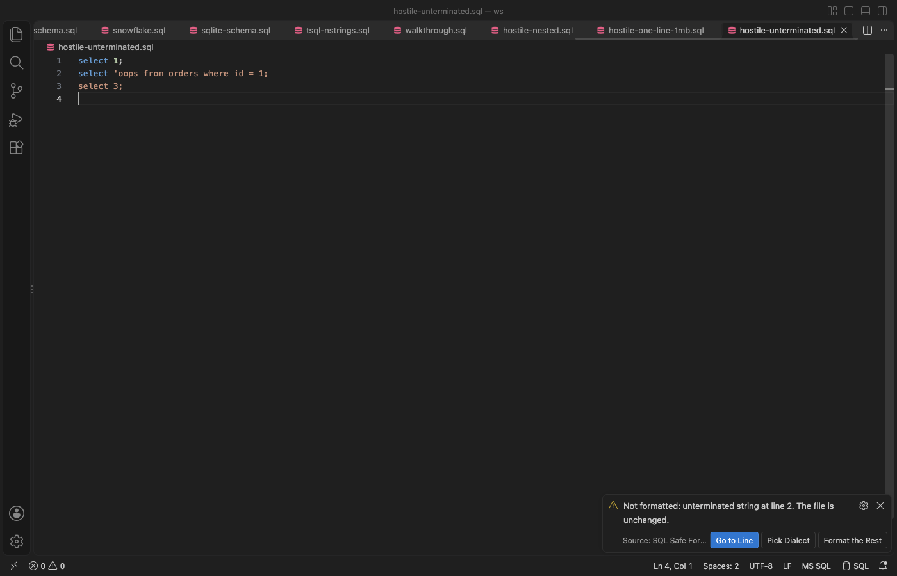
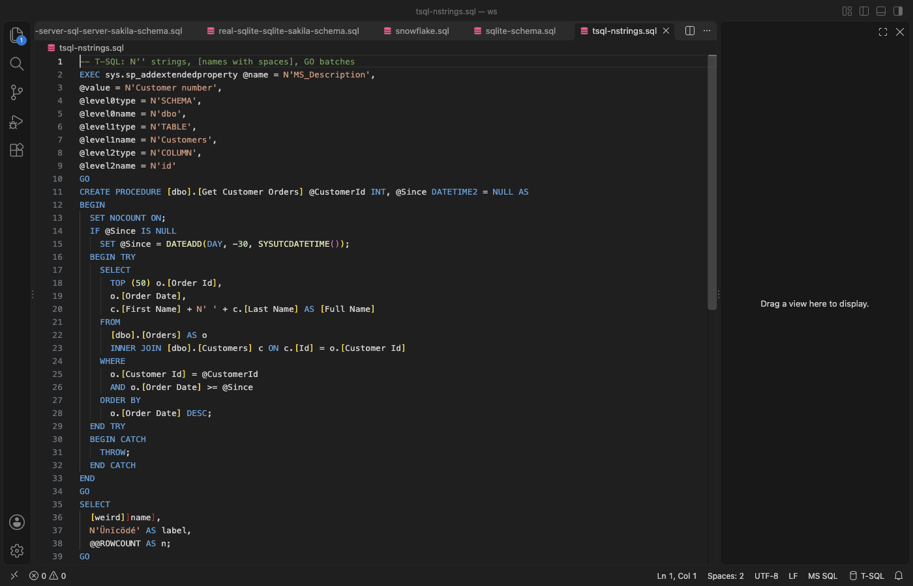

SQL Formatter & Format SQL on Save
SQL Formatter & Format SQL on Save: PostgreSQL, MySQL, T-SQL, PL/SQL (Zovo), a VS Code extension by Zovo
Format SQL in VS Code without breaking it. Free, no sign-in, works offline.
Free, MIT license. Needs VS Code 1.90.0 or newer. Extension ID zovo.zovo-sql-formatter, version 0.1.0.

- Never changes your code. Each result is checked token by token against your SQL. If anything other than whitespace or keyword case would change, the file stays as it is and a message names the line.
- Keeps what other formatters break:
$$and$BODY$bodies,DELIMITER $$blocks,N'...'strings,[names with spaces], `@localhost,=>, commented-out code,GOand/lines, psql\commands andCOPY ... FROM stdin` rows. - 20 dialects, picked for you from the language mode, the file name or the text: PostgreSQL, MySQL, MariaDB, T-SQL, Oracle PL/SQL, SQLite, BigQuery, Snowflake, Redshift, Spark, Hive, Db2, DuckDB, Trino, ClickHouse and more.
- Stored procedures indented by block, with BEGIN/END, IF/ELSE, loops, DECLARE, EXCEPTION and package bodies.
- Large files work. A 5 MB script took 3.5 to 6 seconds in real VS Code tests (4 threads), with a Cancel button. VS Code stays responsive, because formatting runs outside the editor's process.
Questions people ask
Is SQL Formatter & Format SQL on Save free?
Yes. SQL Formatter & Format SQL on Save is free and MIT licensed.
How do I install SQL Formatter & Format SQL on Save?
Click "Install in VS Code" above, or search for zovo.zovo-sql-formatter in the Extensions view.
Use it
- To format a file, press Shift+Alt+F (Shift+Option+F on a Mac), or right-click and choose Format Document.
- To format a selection, select lines and press Cmd+K Cmd+F (Ctrl+K Ctrl+F), or choose Format Selection.
- To format on save, add this to your settings.
``json "[sql]": { "editor.formatOnSave": true, "editor.defaultFormatter": "zovo.zovo-sql-formatter" } ``
- To pick the dialect, click the dialect in the status bar (for example
PostgreSQL). The choice is kept for that file. The settingsqlFormatter.dialectsets it for all files. - For SQL inside a string (Python, JavaScript, Java, C#, Go, PHP), select the SQL or put the cursor in the string, then right-click and choose Format SQL in String.
When it does not format

The file is left as it is when:
- the SQL cannot be read in the chosen dialect (the message names the line, and Pick Dialect tries another one),
- the result would change a token (a string, a name, an operator or a comment),
- the text is nested too deep, or formatting takes longer than the time limit (30 seconds by default).
Format the Rest formats every statement it can read and keeps the others exactly as written. With format on save, the same message shows only once a minute and then moves to the status bar.
Stored procedures

Plain statements inside a procedure are formatted as usual. Control lines go on their own lines and the body is indented by block. MySQL DELIMITER sections, T-SQL GO batches and Oracle / lines are kept.
Why this one
Reviews of two popular SQL formatter listings report these problems. Each one has a test in this repository.
| Review | What this extension does | Test |
|---|---|---|
| "It doesn't work for pl/sql. $$ becomes $ $" (reviews, 2025-04 and 2024-10) | $$, $tag$ and $BODY$ bodies are kept byte for byte in every dialect | $$ bodies stay byte for byte |
| "Turns DELIMITER $$ into DELIMITER $ $" (review, 2023-12) | DELIMITER lines are kept, and each statement in the section is formatted on its own | DELIMITER $$ lines ... are kept |
| "Space between N ' not allowed" (review, 2023-06) | N'...', E'...', X'...' and q'[...]' strings are never split | N'...' strings keep the N |
| "will format commented out code's comma ... and error the code" (review, 2026-03) | Comments are compared before and after; a comma in a comment is never moved, also with leading commas | commented-out code with commas |
| "does not appear to handle escaped (square brackets) column names when they contain spaces" (review, 2026-01) | [first name], [x]]y] and ` full name ` are kept as written | [bracket names] with spaces |
| "Crashed vscode and lost $$$" (review, 2025-08) | Formatting runs in a worker thread with a time limit; a failure leaves the file unchanged | the time limit stops the worker, 10,000 nested parentheses are refused |
| "Not good at all with procedures or functions. Indents at the wrong place." (review, 2024-09) | Procedures, functions, triggers and packages are indented by block | procedures are indented by block, PL/SQL package body |
| "Doesn't work for postgre" (review, 2026-09) | 20 dialects with detection from the file and its text | the text picks the dialect |
This extension uses the open source sql-formatter library (MIT) for plain statements. The checks, the dialect detection, the procedure layout and the client-line handling are its own.
Settings
| Setting | Default | What it does |
|---|---|---|
sqlFormatter.dialect | auto | Dialect for all files |
sqlFormatter.keywordCase | upper | upper, lower or preserve |
sqlFormatter.dataTypeCase, sqlFormatter.functionCase | preserve | Case of data types and function names |
sqlFormatter.commaPosition | trailing | trailing (a,) or leading (, b) |
sqlFormatter.maxLineWidth | 60 | Lists shorter than this stay on one line |
sqlFormatter.indentStyle | standard | standard, tabularLeft or tabularRight |
sqlFormatter.useEditorIndent | true | Use the editor's tab size and tabs or spaces |
sqlFormatter.linesBetweenQueries | 1 | Empty lines between statements |
sqlFormatter.logicalOperatorNewline | before | AND and OR at the start or the end of a line |
sqlFormatter.procedureLayout | true | Indent procedures by block |
sqlFormatter.maxFileSizeMB | 16 | Largest file to format as a whole |
sqlFormatter.timeLimitSeconds | 30 | Stop and leave the file unchanged after this time |
sqlFormatter.threads | 0 | Threads for files of 256 KB and up (0 picks up to 4) |
Privacy
No network access, no telemetry, no account. The extension reads only the file you format.
License
MIT. The bundled sql-formatter library is MIT licensed (see vendor/sql-formatter.LICENSE).
Guides
Install SQL Formatter & Format SQL on Save
Click the button to open VS Code and install it, or press Ctrl+P (Cmd+P on macOS) in VS Code and run ext install zovo.zovo-sql-formatter.
Free, MIT license. Needs VS Code 1.90.0 or newer. Extension ID zovo.zovo-sql-formatter, version 0.1.0.
Source code and issues are on GitHub.
Support this work
If this extension saves you time, you can support the work on GitHub Sponsors. Monthly tiers start at $5, and one-time tiers start at $15. Sponsorship is optional, and the tool works the same without it.
Need your format supported?
Open a format request with a sample file, and I reply there whether it can be done. For USD 299 once, through this GitHub Sponsors tier, I add your file format or a missing feature to this extension, with tests, within 7 days.